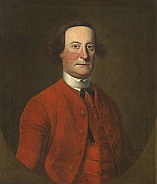

|
by Stefan Bielinski John Bradstreet is said to have been born in England in 1711. His family moved to Annapolis Royal, Nova Scotia in 1714. He was the son of Lieutenant Edmond Bradstreet and his wife, Agatha De La Tour. Their family was small with only another boy who was named Simon. Edmond Bradstreet became ill and died in 1718 - leaving a widow and two young sons. Agatha Bradstreet re-married and her family remained in Annapolis Royal where the boys grew up. In 1735, she purchased commissions for both sons in the British army. Bi-lingual John Bradstreet served at Louisburg where he met and married the widow of his cousin. Her maiden name was Mary Aldridge. The marriage produced two daughters. In 1746, now Captain Bradstreet was appointed Lieutenant Governor of Newfoundland. He served until 1751 when he went to England. Returning with General Edward Braddock in 1755, he was sent to Oswego to support the command of Governor William Shirley. In that year, he received a New York commission to be the commissary at Oswego - thus providing him with an opportunity for profit. By the summer of 1756, he was stationed in Albany and was living as the guest of a young provincial officer named Philip Schuyler. During the Seven Years War, Bradstreet served at Oswego, Halifax, and Ticonderoga. In 1758, he led an expedition that captured Fort Frontenac (Kingston, Ontario). His active military career was distinguished and he reached the rank of Colonel in 1762. He led an expedition against the western Indians and negotiated a treaty with them at Detroit in 1764. His family never joined him in New York. After living in Boston, by 1765 Mary Bradstreet and her daughters had removed to England. In his fifties by that time, John Bradstreet had settled permanently in Albany where he enjoyed the hospitality of Philip Schuyler and the close friendship of Schuyler's wife, Catherine. In 1761, while Schuyler was in England, Bradstreet took charge of the construction of Schuyler Mansion. During the 1760s, he began to acquire acreage in the colony of New York. He secured a leasehold from the Van Rensselaers on a prime strip of land located along Albany's southern border. Calling that parcel "Whitehall", he began to engage tenants to farm the bottomland that included "Patroon's Island." In 1768, he also took title to a large tract located between the Delaware and Susquehanna Rivers - more than a hundred miles west of Albany. By the 1770s, he was looking to develop that land as well. Except for the Schuylers, Bradstreet had a more contentious time with other Albany leaders in that he was clearly identified with the British, complained about Albany to his superiors, and brought actions against Albany people in the local courts. At the same time, his aggressive manner caused friction with Sir William Johnson - the most powerful British adherent in the entire regions. Despite considerable achievement, Bradstreet's ambition for high station was undermined by an aggressive and abrasive personality that kept him at arms length from royal officials who characterized his brashness as "all too peculiar to those born in America." Not until 1771 when he was sick with dropsy and broken by cirrhosis of the liver, was he promoted to the rank of Major General. John Bradstreet died in New York City in September 1774 and was buried in Trinity churchyard. His will left his South Albany farm to his namesake, John Bradstreet Schuyler. Portrait by Thomas McIlworth - who painted a number of early Albany
people. A recent catalog of his localy focused work is beautifully
illustrated and offers much useful information. Adapted from an online
posting. We have not tracked the recent "life" of this portrait and hold no information on its history or ownership. However,
another online article provides some insight.
The dead cousin also was named John Bradstreet. first posted: 5/31/01; last revised 6/15/10 |
{kind=link}